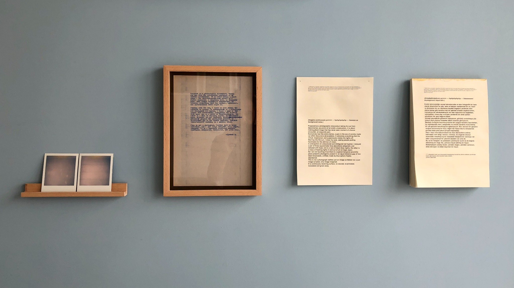
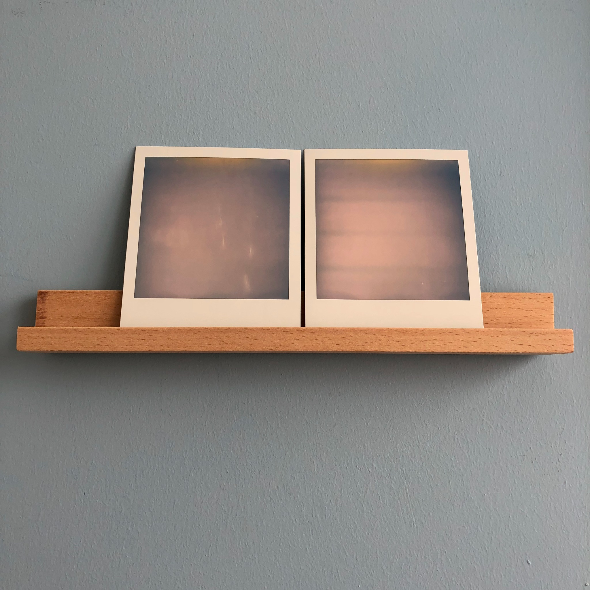
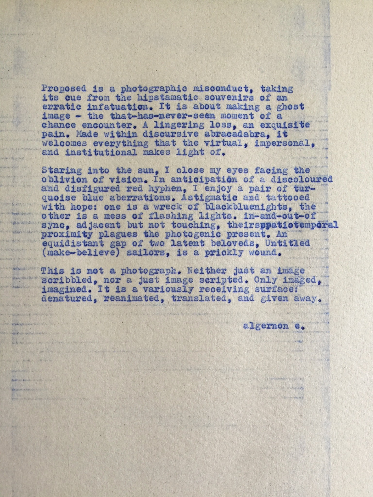
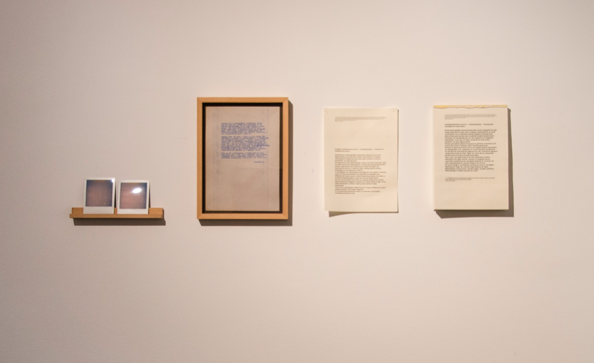
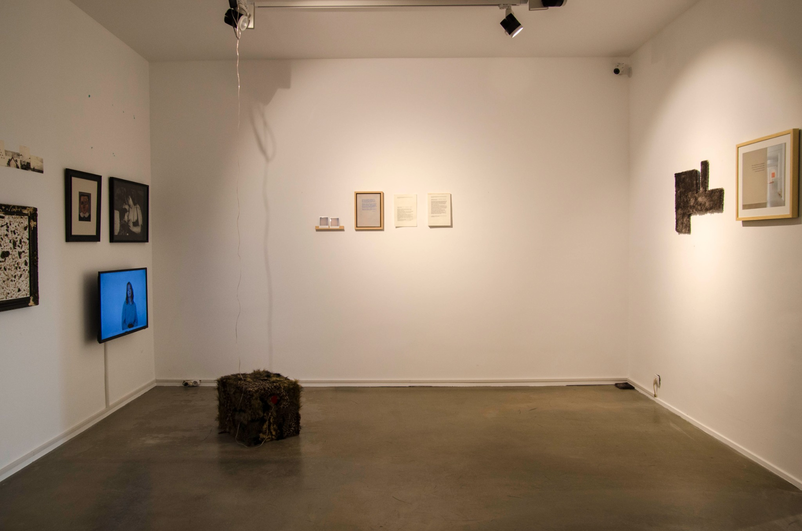

(5 parçada) umut / hope (in 5 parts)
2018göz göze iki Polaroid, daktilo bir metin, bu metnin ses üzerinden yeniden yazıya dönüşmesi, bu suretin de paylaşmaya açık bir çevirisi / two Polaroids hand in glove, typewritten text, transcription of its sound recording, translation of the transcription, open for sharing



Click to read: Yavuz (original) · Derya (transcription) · Seda (translation)


Vanishing Mediator, 15 September – 30 December 2018
Müze Evliyagil, Ankara
Curated by Aylime Aslı Demir
Artists: Ardıl Yalınkılıç, BAÇOY KOOP, Belit Sağ, Coşkun Aşar, Erdem Taşdelen, Gökçe Yiğitel, Gökçe Erhan, Hüseyin Arıcı, İlhan Sayın, İris Ergül, İz Öztat, Kemal Özen, Kerem Ozan Bayraktar, Metin Çelik, Mustafa Avcı, Roland Topor, Serkan Çalışkan, Sevinç Çalhanoğlu, Silva Bingaz, Yavuz Erkan